SIGIL · 01 · OUTER FIELD
The Quest
追尋之印
大家都在找、人人都想要的那個「正確答案」。它看得到、摸得到——但不一定是你的。
外面是《印第安納瓊斯》式的探索——
裡面是答案其實從內部長出來。
前三場課程，我們一起用夢幻森林、煉金大釜、戰隊旗陣，
幫學員建立「品牌煉金術」的第一層想像。
2026 年度，蘋果老師希望把敘事推得更深一層——
學員要去找的，是「屬於自己的聖杯」。
外面是尋找聖杯的世界；
裡面是發現——聖杯其實在自己心裡。
於是主場景從「茂密森林」轉為「古老聖殿」； 主角從「裝飾的樹」變成「從石縫撐出來的樹」—— 那棵樹，就是學員自己長出來的承載能力。
蘋果老師的品牌印記——李子型 A 字標與 APPLE 字標——是既有的設計資產， 不是這次的敘事主題。會以 LOGO、桌面小物、擺飾金蘋果等形式，低調出現在場域細節與主背板右上角。
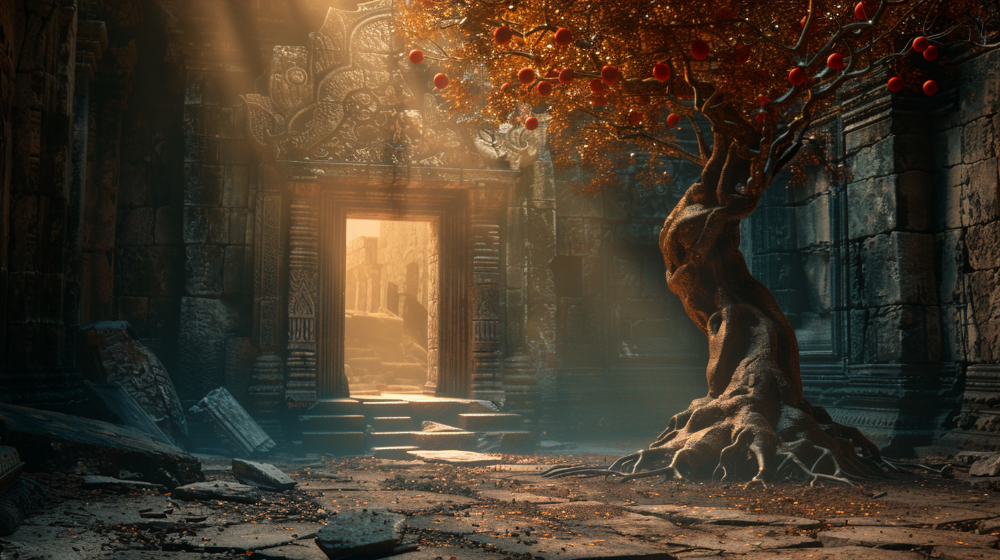
照這個結構做，就不會歪。每一層都有明確的功能。
功能：建立冒險電影感
古老石門、拱形神殿入口、風化石材、雕刻紋路。外面偏暗，裡面有光——第一眼就要建立「我要走進去」的衝動。
功能：讓人「走進去」
石階或地面延伸、裂紋、探索路徑、微光導引。這一層不搶戲，但沒有它畫面就會斷掉。
功能：真正的主角
一棵從石殿地面裂縫長出的樹。根系可見（非常重要）、樹幹有力量感。
感覺要像：「不是種的，是撐出來的。」
功能：故事的「被尋找的答案」
聖杯的概念透過樹幹裂縫內的光、根系中的金色反光、或立於樹下的一個儀式性容器來呈現——不一定是實體杯，而是「光的所在」。
敘事：「外面尋找——裡面發現。」
功能：蘋果老師個人品牌識別
功能：決定整體質感
一道主光從上方或門外打進來，落在樹幹與根系中的金色光點上，周圍保持暗。
關鍵感覺：「被選中的東西才被照亮。」
外面是尋找聖杯的世界——裡面是發現聖杯其實在自己心裡。
大家都在找、人人都想要的那個「正確答案」。它看得到、摸得到——但不一定是你的。
走向聖杯必經的代價。不是人人願意付——但付過的人，才認得什麼是「屬於自己的」。
走完一圈才發現——聖杯其實是從自己裡面長出來的。這就是「內生之樹」所承載的東西。
👉 學員站在入口與樹之間，前方是試煉，後方是答案。
動作只有三個：看樹 · 伸手（選擇）· 站在光裡。
兩張 AI 生成主視覺設定方向，三張實體佈置樣本證明可做得出來。
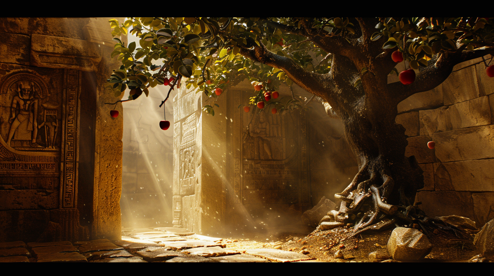
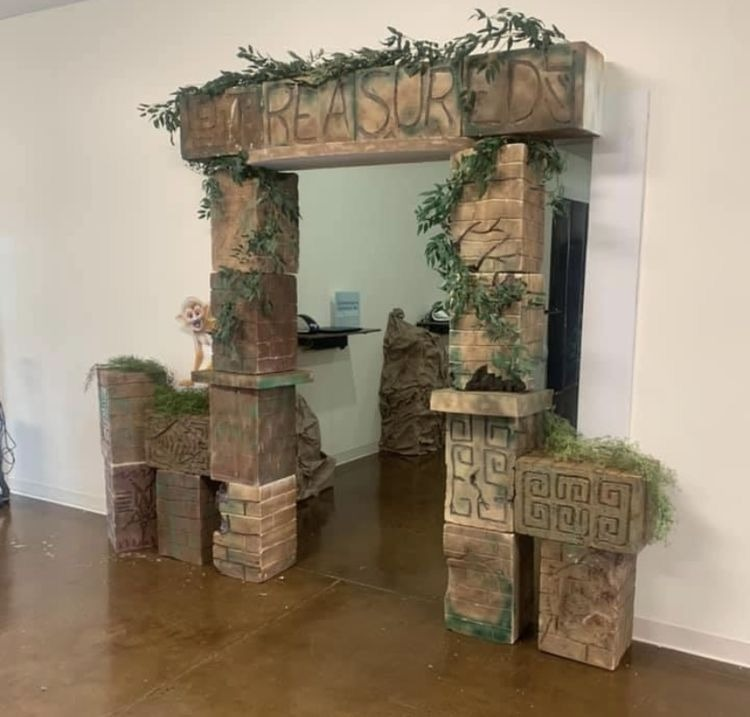
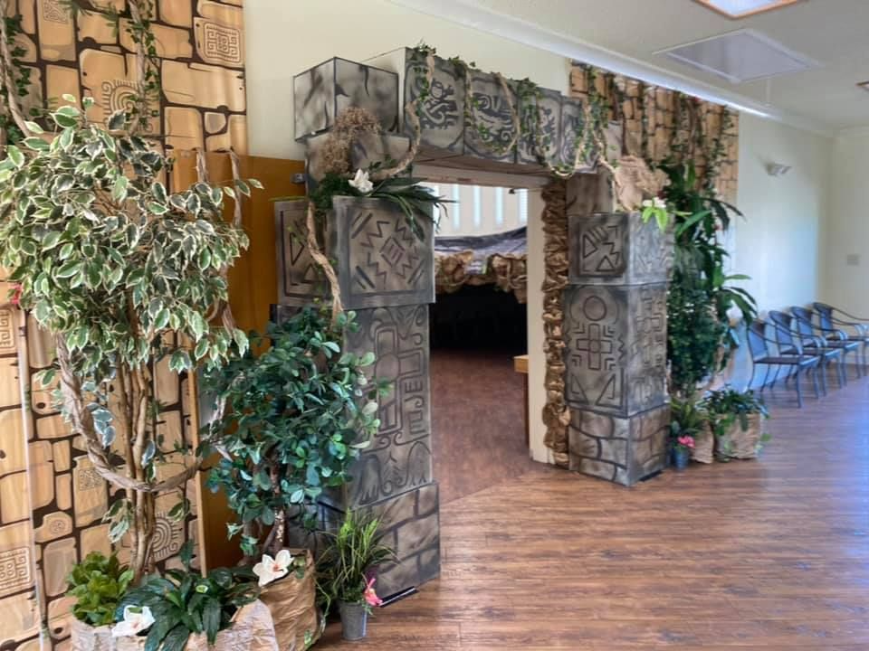
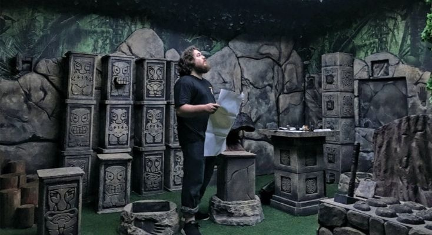
要做出「古老石門」的電影感，關鍵不在印刷，而在光影厚度—— 所以我們採用雙層背板堆疊，讓 2D 平面長出 3D 雕刻感。
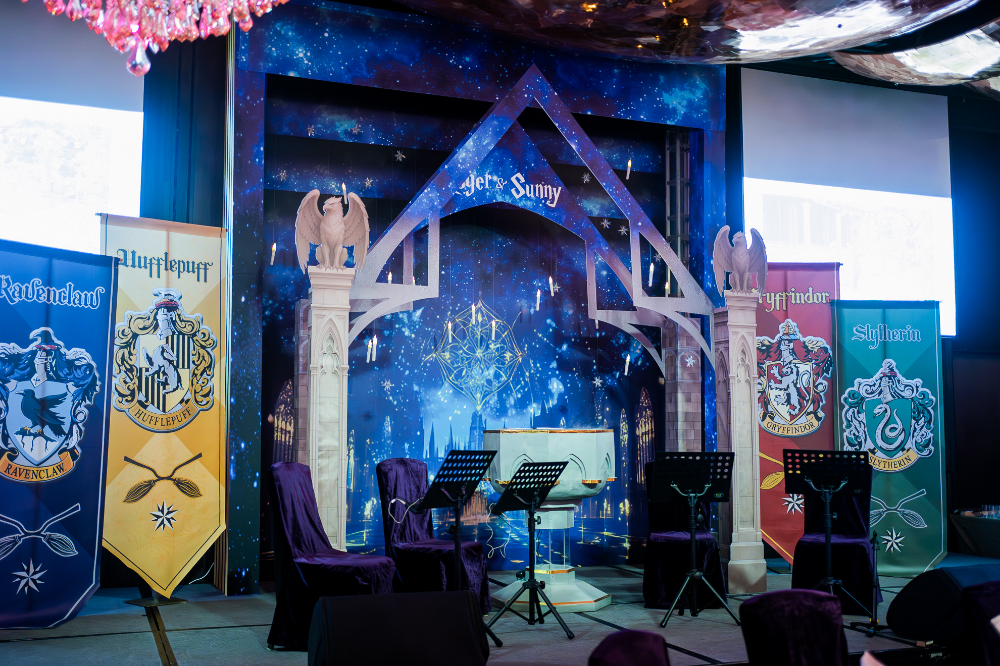
第一層完整石材色調主背板（米黃、灰褐、風化紋），建立整面牆的基礎質感與色溫。
第二層拱門石塊、磚縫、雕刻紋樣，以裁切拼貼手法疊加於打底之上，自然形成真實陰影與層次。
兩層相疊產生的陰影差，讓平面背板在學員拍照時呈現真實 3D 雕刻感——比單層印刷更深邃、更耐看。
同一主題、同一系統，在四個場地依序落地。首場立 IP，後三場延伸續用。
個人品牌大師班 · 品牌煉金術
個人品牌大師班 · 品牌煉金術
個人品牌大師班 · 品牌煉金術
個人品牌大師班 · 品牌煉金術
本報價為首次立案原價，實際執行時將依續用、回收背板、設計沿用等條件給予優惠。 四場累積後，影像資產沉澱為蘋果老師的年度品牌素材庫。
2026/05/19–21 · 台中星享道｜含年度主視覺一次性資產投資
| 類別 | 項目 | 規格 | 單價 |
|---|---|---|---|
| 年度主視覺 | 主視覺設計 × 資產沿用 | 聖殿入口 × 內生之樹整案設計｜年度四場沿用，僅首場計一次 | 30,000 |
| 廳外 · 拍照區 | 活動拍照區 | 500 × 260 cm，含地貼、花藝燈飾（雙層背板工法） | 40,000 |
| 設計排版費 | 主背板輸出排版與現場施作 | 3,500 | |
| 聖殿入口 × 內生之樹主景 | 立體石拱門 + 內生樹 + 聖杯光源 + 金蘋果點綴 | 16,000 | |
| 廳外 · 接待 | 接待桌佈置 | 單側高低鮮花桌花 + 簡易道具 | 10,000 |
| 廳內 · 學員區 | 學員桌佈置 × 10 組 | 續約價 $20,000 / 10 組（追加 +2,500/組）· 客製化森林主題（香菇、煤油燈、寶箱） | 20,000 |
| 學員商品陳列區 × 2 | IBM 桌（1 區 2 張）+ 鮮花 × 2 組 | 8,000 | |
| 廳內 · 戰隊 | 學院旗幟 × 10 隊 | 沿用去年製作 · 僅收現場施工費（240 cm 伸縮支架 · 800 × 10） | 8,000 |
| 旗幟間燈串 | 戰隊陣列氛圍光源 | 2,000 | |
| 廳內 · 舞台 | 講桌花 | 50–60 cm 鮮花桌花 | 4,000 |
| 煉金釜桌面客製 | 客製化森林主題 + 桌布 | 2,500 | |
| 其他 | 迎賓看板 | 活動看板 + 地面裝飾 | 4,000 |
| 座位系統（子網域 Apple） | 附贈｜子網域設定 + 全年度服務 | 0 | |
| 小計（未稅）· 首場含年度資產 | 148,000 | ||
| 稅額 5% | 7,400 | ||
| 首場實際總費用 | NT$ 155,400 | ||
| 第 2–4 場 · 每場未稅（不含年度資產） | 118,000 /場 | ||
| └ 續用背板優惠 · 每場可扣 | −15,000 /場 | ||
| ＝ 續用後每場實際結算（未稅） | 103,000 /場 | ||
從魔法森林到探索聖殿——煉金釜、蘋果樹、學院旗、森林桌景， 是這個品牌已經建立的視覺語彙。2026 年度四場，將在這套語彙上長出「聖殿」新章。
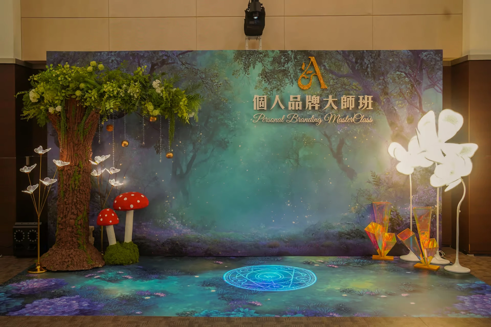
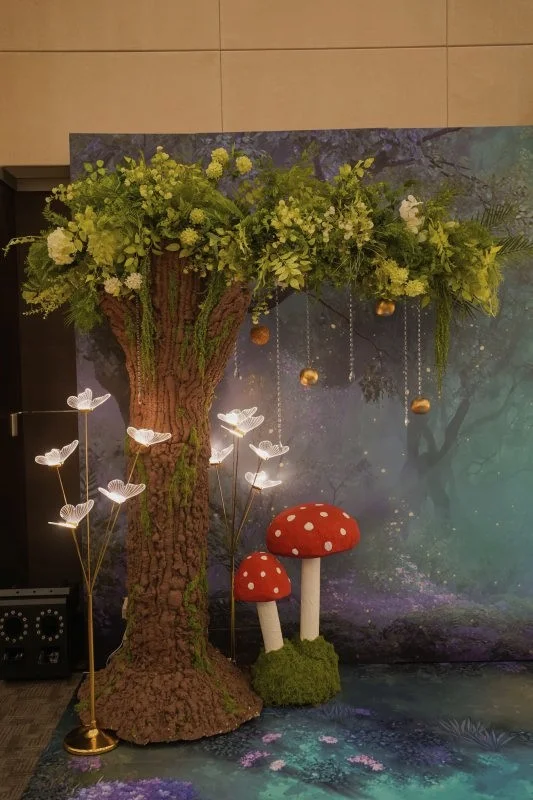
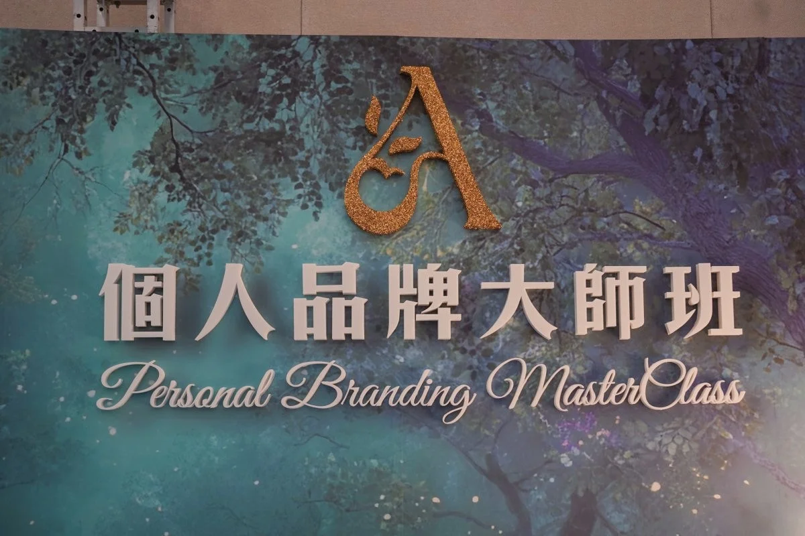
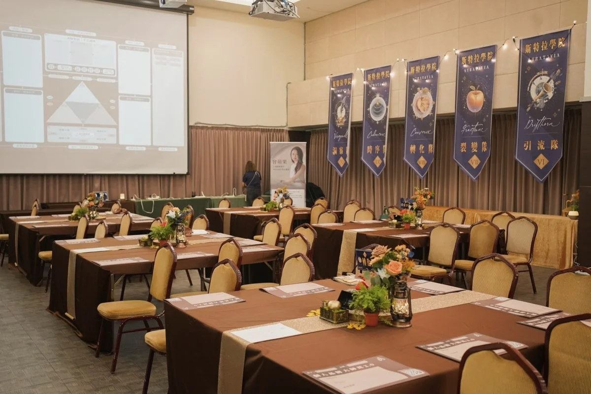
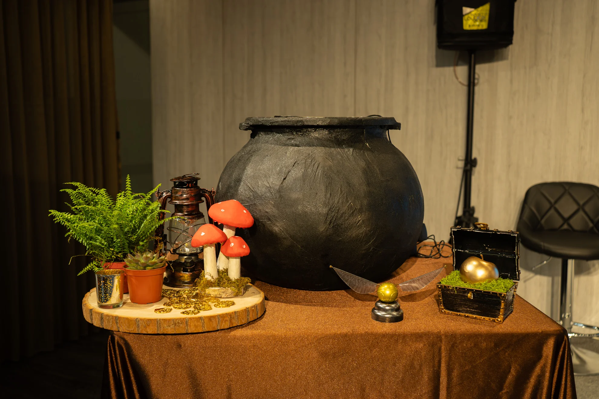
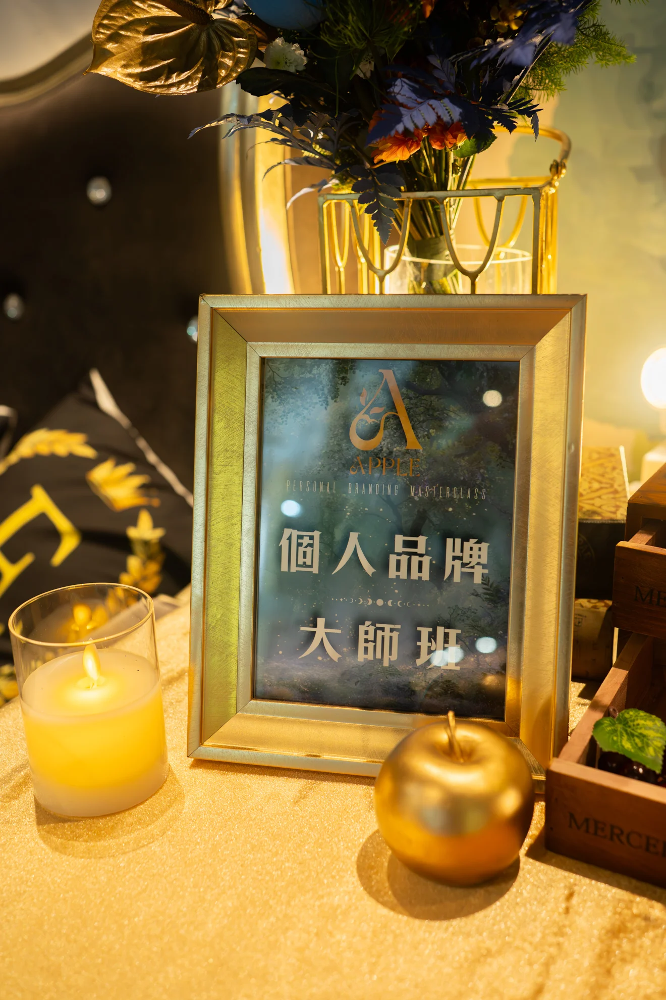
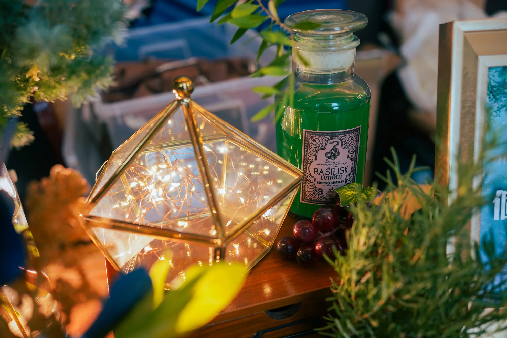
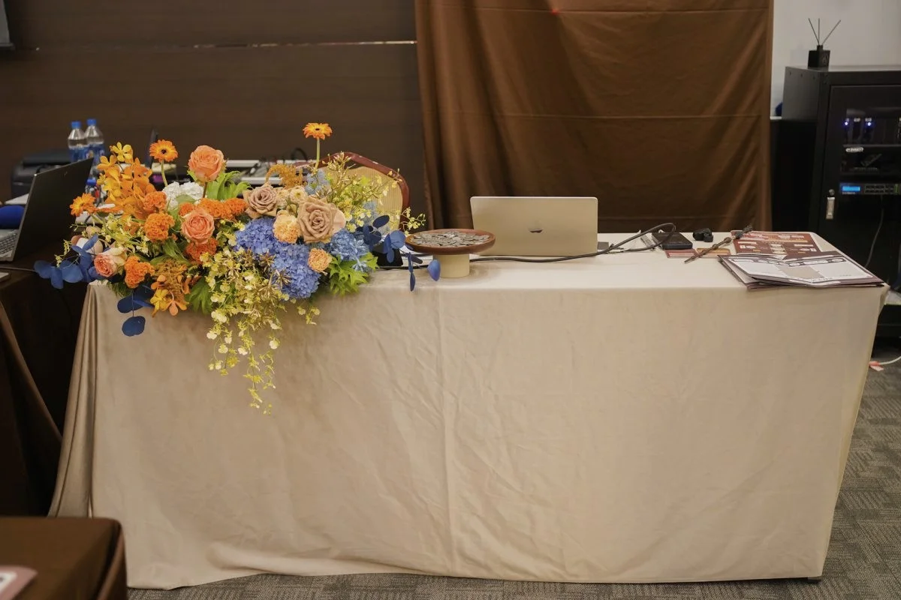
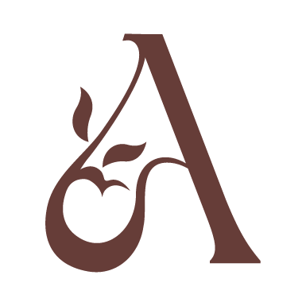
2026 年度四場佈置，由村花弄囍為蘋果老師執行。
一個主題、四個場地、一整年的影像沉澱——
讓學員每一次走進來，都能認出這是「個人品牌大師班」的場。